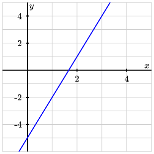

Find the equation for the given line. Write your answer in point-slope form.

Solution.
-
First we need to choose a point on the line. I will choose the point \((a,b)=(2,1)\text{,}\) but you could use other points on the graph instead, like \((3,4)\) or \((1,-2)\text{.}\)
-
Using two points on the graph, we need to find the slope. I will use the points \((2,1)\) and \((3,4)\text{.}\) With these, I compute the slope.\begin{equation*} m = \frac{1-4}{2-3} = \frac{-3}{-1} = 3 \end{equation*}You may use different points from the graph to compute the slope, but no matter which points you choose, you should get \(m=3\text{.}\)
-
Plugging this point and slope into the formula for Point-Slope Form, we get\begin{equation*} y-1 = 3(x-2) \end{equation*}If you choose a different point in Step 1, it will result in a different but equivalent answer. For example, if you use the point \((3,4)\text{,}\) your answer will be\begin{equation*} y-4 = 3(x-3)\text{.} \end{equation*}